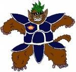

Forums galactiques > Taverne galactique : lieu de discussion informel > Recherche
1) encore un glandeur ...dégage | 11 | |
2)chouette de la chair fraîche | 8 | |
3) bof... | 8 | |
4) voila un futur gibier de potence | 6 | |
5) pas d'avis | 2 | |
Total : 35 vote(s) | ||
Pages : 1 2
| Judayan Réputation à la taverne : 527  13/12 ETU 13:51 | Score : 0 Détails HRP/ Moi je dis ça uniquement parceque tu as placé le mot jeu dans ton message... certains sont morts pour moins que ça!
Ah et moi j'écoute du rap parfois alors le premier qui veut lancer la croisade contre moi est le bienvenu j'ai quelques Mo de CLA qui vous attendent/HRP | ||
| Silimaure IA Réputation à la taverne : 24  13/12 ETU 13:55  | Score : 0 Détails Ce que je voulais dire, que l'un des boulets que j'ai rencontrer était Lil'Wesly(un truc comme ça) et il ce prenait pour un rapeur un certain Boulba, et un autre ce prenait pour un Snoop Dog
| ||
| Gnozal Réputation à la taverne : 0 13/12 ETU 13:55 | Score : 0 Détails Je n'ai rien dic contre le fan de rap. J'assume mon allergie comme je comprend que certains ne supporte pas le rock.
Le mot jeu ??? il en faut pas beaucoup ici..... | ||
| Judayan Réputation à la taverne : 527 13/12 ETU 13:56 | Score : 0 Détails Non!
Ah et pas de monoligne à l'Assemblée! enfin sauf en cas d'humour décapant de haute volée! EDIT/ Ceci dit nous avons tous signé une charte qui interdit le HRP à l'Assemblée et le déconseille vivement à la Taverne, raison pour laquelle je vais maintenant fermer ma gueule! | ||
| Grabeuh Réputation à la taverne : 1675  13/12 ETU 14:34 | Score : 0 Détails A l'attention de Silimaure, je ne sais pas si tu t'étais déja envolé vers d'autres horizons à ce moment là, mais Snoop Dogg avait eu une rédemption soudaine et était devenu un commandant respecté et avait même fondé la School Galactica, afin de permettre aux "récupérables" de faire des progrès.
Ce n'est pas d'être un fan de rap qui détruit une santé mentale, c'est de n'être fan que de ça et de ne pas savoir élargir son champ de "vision (haha, pour de la musique, c'est trop beau...)" Moi, lorsque j'ai fait mon concert pour le départ des Reds, j'ai tenté de varier les genres musicaux, afin de ne pas trop lasser le public. Il faut savoir se diversifier un peu... |
Pages : 1 2
Forums galactiques > Taverne galactique : lieu de discussion informel > Recherche